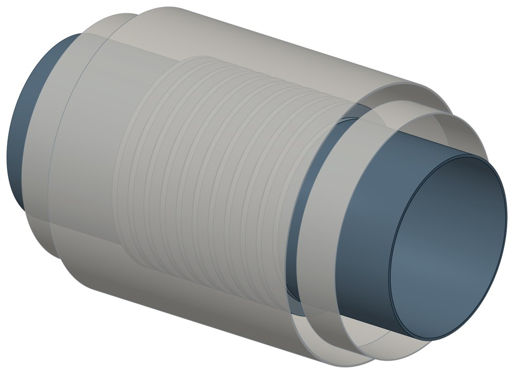

Компенсатор сильфонный СКУ.ППМ СКУППМ
Dн 57–1020 мм, масса 137 кг.

- Диаметр трубы Dн
- 57–1020 мм
- Исполнений
- 30
- Масса
- 137 кг
- 3D-модели
- у всех исполнений (условные: общий вид по габаритам)
Таблица исполнений СКУППМ
| Обозначение | Код ПРОМБУРГ | sмм | Думм | Рукгс/см² | Ходмм | Lмм | Оболочкамм | D нар.мм | Массакг | 3D |
|---|---|---|---|---|---|---|---|---|---|---|
| СКУ.ППМ-16-50-70 | ПБ-СКУППМ-0050-1 | — | 50 | 16 | 70 | 950 | — | 225 | — | 3D |
| СКУ.ППМ-16-65-70 | ПБ-СКУППМ-0065-1 | — | 65 | 16 | 70 | 975 | — | 240 | — | 3D |
| СКУ.ППМ-16-80-70 | ПБ-СКУППМ-0080-1 | — | 80 | 16 | 70 | 985 | — | 260 | — | 3D |
| СКУ.ППМ-16-100-100 | ПБ-СКУППМ-0100-1 | — | 100 | 16 | 100 | 1045 | — | 280 | — | 3D |
| СКУ.ППМ-16-125-100 | ПБ-СКУППМ-0125-1 | — | 125 | 16 | 100 | 1065 | — | 325 | — | 3D |
| СКУ.ППМ-16-150-100 | ПБ-СКУППМ-0150-1 | — | 150 | 16 | 100 | 1065 | — | 350 | — | 3D |
| СКУ.ППМ-16-200-160 | ПБ-СКУППМ-0200-1 | 6 | 200 | 16 | 160 | 1334 | 309 | 367 | 137 | 3D |
| СКУ.ППМ-16-250-160 | ПБ-СКУППМ-0250-1 | — | 250 | 16 | 160 | 1230 | — | 500 | — | 3D |
| СКУ.ППМ-16-300-180 | ПБ-СКУППМ-0300-1 | — | 300 | 16 | 180 | 1275 | — | 550 | — | 3D |
| СКУ.ППМ-16-400-190 | ПБ-СКУППМ-0400-1 | — | 400 | 16 | 190 | 1325 | — | 660 | — | 3D |
| СКУ.ППМ-16-500-200 | ПБ-СКУППМ-0500-1 | — | 500 | 16 | 200 | 1330 | — | 810 | — | 3D |
| СКУ.ППМ-16-600-200 | ПБ-СКУППМ-0600-1 | — | 600 | 16 | 200 | 1330 | — | 900 | — | 3D |
| СКУ.ППМ-16-700-210 | ПБ-СКУППМ-0700-1 | — | 700 | 16 | 210 | 1370 | — | 1000 | — | 3D |
| СКУ.ППМ-16-800-210 | ПБ-СКУППМ-0800-1 | — | 800 | 16 | 210 | 1370 | — | 1100 | — | 3D |
| СКУ.ППМ-16-1000-220 | ПБ-СКУППМ-1000-1 | — | 1000 | 16 | 220 | 1385 | — | 1300 | — | 3D |
| СКУ.ППМ-25-50-70 | ПБ-СКУППМ-0050-2 | — | 50 | 25 | 70 | 950 | — | 225 | — | 3D |
| СКУ.ППМ-25-65-70 | ПБ-СКУППМ-0065-2 | — | 65 | 25 | 70 | 975 | — | 240 | — | 3D |
| СКУ.ППМ-25-80-70 | ПБ-СКУППМ-0080-2 | — | 80 | 25 | 70 | 985 | — | 260 | — | 3D |
| СКУ.ППМ-25-100-100 | ПБ-СКУППМ-0100-2 | — | 100 | 25 | 100 | 1045 | — | 280 | — | 3D |
| СКУ.ППМ-25-125-100 | ПБ-СКУППМ-0125-2 | — | 125 | 25 | 100 | 1065 | — | 325 | — | 3D |
| СКУ.ППМ-25-150-100 | ПБ-СКУППМ-0150-2 | — | 150 | 25 | 100 | 1065 | — | 350 | — | 3D |
| СКУ.ППМ-25-200-160 | ПБ-СКУППМ-0200-2 | 6 | 200 | 25 | 160 | 1334 | 309 | 367 | 137 | 3D |
| СКУ.ППМ-25-250-160 | ПБ-СКУППМ-0250-2 | — | 250 | 25 | 160 | 1230 | — | 500 | — | 3D |
| СКУ.ППМ-25-300-180 | ПБ-СКУППМ-0300-2 | — | 300 | 25 | 180 | 1275 | — | 550 | — | 3D |
| СКУ.ППМ-25-400-190 | ПБ-СКУППМ-0400-2 | — | 400 | 25 | 190 | 1325 | — | 660 | — | 3D |
| СКУ.ППМ-25-500-200 | ПБ-СКУППМ-0500-2 | — | 500 | 25 | 200 | 1330 | — | 810 | — | 3D |
| СКУ.ППМ-25-600-200 | ПБ-СКУППМ-0600-2 | — | 600 | 25 | 200 | 1330 | — | 900 | — | 3D |
| СКУ.ППМ-25-700-210 | ПБ-СКУППМ-0700-2 | — | 700 | 25 | 210 | 1370 | — | 1000 | — | 3D |
| СКУ.ППМ-25-800-210 | ПБ-СКУППМ-0800-2 | — | 800 | 25 | 210 | 1370 | — | 1100 | — | 3D |
| СКУ.ППМ-25-1000-220 | ПБ-СКУППМ-1000-2 | — | 1000 | 25 | 220 | 1385 | — | 1300 | — | 3D |
Чтобы заказать, сообщите обозначение и код ПРОМБУРГ: +7 (499) 325-51-35, promburg@yandex.ru.
Собрать узел с этим изделием
- Конструктор узла: собрать участок с компенсатором под свои данные труба, длина, среда, условия — состав узла и спецификация бесплатно
На трубу Dн 57–1020 мм в каталоге
Позиции каталога с исполнениями на те же наружные диаметры трубы.
Опоры и подвески
- Опора неподвижная двухупорная ТС-660 общих Dн: 15
- Опорные плиты диэлектрические ТС-632 общих Dн: 15
- Опоры неподвижные ППУ-ОЦ (ПЭ) ППУ неподвижная общих Dн: 15
- Опоры скользящие ППУ-ПЭ(ОЦ) ППУ скользящая общих Dн: 15
- Опоры хомутовые скользящие ФСО1 для труб в ППУ общих Dн: 15
- Опоры хомутовые скользящие ФСО2 для ППУ общих Dн: 15
- Опоры приварные неподвижные скользящие ОПН общих Dн: 15
- Опоры сварные скользящие неподвижные и направляющие СТО 79814898-130 общих Dн: 15
- Опоры хомутовые и скользящие неподвижные и направляющие СТО 79814898-131 общих Dн: 15
- Опора приварная скользящая и неподвижная ОСТ 34-10-616-93 общих Dн: 15
- Опоры хомутовые скользящие ОСТ 34-10-617-93 общих Dн: 15
- Опоры хомутовые неподвижные ОСТ 34-10-618-93 общих Dн: 15
- Опоры скользящие неподвижные ОСТ 34-10-623-93 общих Dн: 15
- Блок подвески с опорной балкой ОСТ 34-10-726-93 общих Dн: 15
И ещё 97 типов — в оглавлении каталога.
Детали трубопровода
- Отвод стальной крутоизогнутый 90° общих Dн: 15
- Фланец стальной воротниковый общих Dн: 15
- Фланец стальной плоский приварной общих Dн: 15
- Отвод стальной крутоизогнутый 90°, 09Г2С общих Dн: 14
- Заглушка стальная эллиптическая общих Dн: 12
- Переход стальной концентрический общих Dн: 11
- Днище стальное эллиптическое общих Dн: 6
- Отвод нержавеющий 90° общих Dн: 1
Другие компенсаторы
- Компенсатор сильфонный 2ОПКР общих Dн: 15
- Компенсатор сильфонный 2ОПКР (ИЯНШ) 2ОПКРИ общих Dн: 15
- Компенсатор сильфонный 2СКУ.М 2СКУМ общих Dн: 15
- Компенсатор сильфонный 2СКУ.М (ИЯНШ) 2СКУМИ общих Dн: 15
- Компенсатор сильфонный 2СКУ.ППМ 2СКУППМ общих Dн: 15
- Компенсатор сильфонный 2СКУ.ППМ (ИЯНШ) 2СКУППМИ общих Dн: 15
- Компенсатор сильфонный 2СКУ.ППУ 2СКУППУ общих Dн: 15
- Компенсатор сильфонный 2СКУ.ППУ (ИЯНШ) 2СКУППУИ общих Dн: 15
- Компенсатор сильфонный 2СКУ.ППУ/ОЦ (ИЯНШ) 2СКУППУОЦИ общих Dн: 15
- Компенсатор сильфонный КС общих Dн: 15
И ещё 24 типа — в оглавлении каталога.
Другие типы раздела
Компенсаторы (сильфонные, резиновые)
- Компенсатор сильфонный 2ОПКР
- Компенсатор сильфонный 2ОПКР (ИЯНШ) 2ОПКРИ
- Компенсатор сильфонный 2СКУ.М 2СКУМ
- Компенсатор сильфонный 2СКУ.М (ИЯНШ) 2СКУМИ
- Компенсатор сильфонный 2СКУ.ППМ 2СКУППМ
- Компенсатор сильфонный 2СКУ.ППМ (ИЯНШ) 2СКУППМИ
- Компенсатор сильфонный 2СКУ.ППУ 2СКУППУ
- Компенсатор сильфонный 2СКУ.ППУ (ИЯНШ) 2СКУППУИ
- Компенсатор сильфонный 2СКУ.ППУ/ОЦ (ИЯНШ) 2СКУППУОЦИ
- Компенсатор сильфонный DEK
- Компенсатор сильфонный фланцевый KSOF
- Компенсатор сильфонный для систем отопления
- Компенсатор сильфонный для отопления с кожухом КОК
- Компенсатор сильфонный КС
- Компенсатор сильфонный КСО
- Компенсатор сильфонный КСО.3 с внутренним экраном КСО3
- Компенсатор сильфонный КСО-Д КСОД
- Компенсатор сильфонный КСО (ИЯНШ) КСОИ
- Компенсатор сильфонный КСОФ
- Компенсатор сильфонный антивибрационный газовый КСУ-Г КСУГ
- Компенсатор сильфонный ОПКР
- Компенсатор сильфонный ОПКР (ИЯНШ) ОПКРИ
- Компенсатор резиновый фланцевый NBR РКН
- Компенсатор резиновый фланцевый SBR РКС
- Компенсатор резиновый фланцевый PTFE РКТ
- Компенсатор резиновый фланцевый EPDM РКЭ
- Компенсатор сильфонный сейсмический
- Компенсатор сильфонный стартовый СК
- Компенсатор сильфонный СКУ.М СКУМ
- Компенсатор сильфонный СКУ.М (ИЯНШ) СКУМИ
- Компенсатор сильфонный СКУ.ППМ (ИЯНШ) СКУППМИ
- Компенсатор сильфонный СКУ.ППУ СКУППУ
- Компенсатор сильфонный СКУ.ППУ (ИЯНШ) СКУППУИ
- Компенсатор сильфонный СКУ.ППУ/ОЦ (ИЯНШ) СКУППУОЦИ
Частые вопросы
Что указать в заявке, чтобы получить цену без уточнений?
Обозначение с номером исполнения или код ПБ, количество, Dн и стенку трубы, расчётную температуру наружного воздуха, покрытие, город доставки и желаемый срок. Кнопка «В заявку» в таблице собирает спецификацию, которую можно выгрузить в Excel или отправить письмом.
Как расшифровать обозначение 2СКУ.М-16-200-320?
Цифра 2 впереди — два сильфона, СКУ.М — тип, 16 — давление Ру в кгс/см², 200 — условный проход Ду, 320 — осевой ход в миллиметрах. У компенсаторов КСО порядок другой: КСО 20-16-50 — это Ду 20, Ру 16, ход 50 мм. Рядом в таблице стоит код ПРОМБУРГ вида ПБ-2СКУМ-0200-1: тип, Ду, номер внутри типа и Ду.
Осевой ход в таблице — это в одну сторону или полный?
У изделий с пометкой ИЯНШ — полный рабочий ход: сжатие плюс растяжение. Компенсатор поставляется в среднем положении и работает на половину этого хода в каждую сторону; у стартовых указан ход сжатия. Для остальных позиций уточняйте при заказе.
Компенсатор подбирают по Ду или по наружному диаметру трубы?
В таблицах раздела стоит условный проход Ду. Патрубок под приварку соответствует стальной трубе этого прохода: Ду 100 — труба 108 мм, Ду 200 — 219 мм. В заявке укажите наружный диаметр и толщину стенки трубы.
Что значит пометка «модель условная»?
3D-модель компенсатора показывает общий вид по габаритам из таблицы: длине, диаметрам, стенке патрубка. Число и профиль гофр, размеры кожуха и фланцев приняты типовыми. Это не чертёж: для привязки берите размеры из таблицы.
На какую температуру рассчитаны сильфонные компенсаторы?
Для изделий ИЯНШ: сетевая вода и ГВС — до 200 °С, пар — до 350 °С. Для компенсаторов в пенополимерминеральной изоляции (СКУ.ППМ) — до 150 °С, в ППУ-изоляции (ПЭ.I и ОЦ) — вода до 140 °С, кратковременно до 150 °С. Для остальных позиций раздела температуру уточняйте при заказе.
Какой срок службы и ресурс у сильфонного компенсатора?
Для изделий ИЯНШ назначенный срок службы — не менее 30 лет. Ресурс задан числом циклов: для тепловых сетей — 10 циклов на полный ход, 150 циклов на 70 % хода и 10 000 циклов на 20 % хода; для паропроводов — 3000 циклов. Стартовый компенсатор рассчитан на один рабочий цикл при вводе сети.